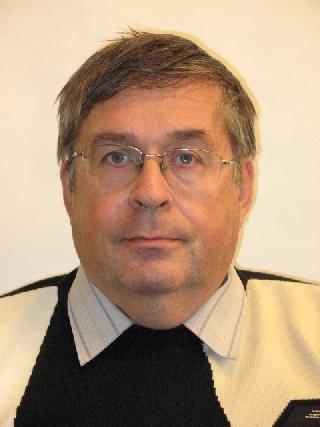

Vladimir Grishaev, Senior Researcher.

B.Verkin ILTPE of NASU –
B. Verkin Institute for Low Temperature Physics and Engineering
of the National Academy of Sciences of Ukraine, 47 Nauky Ave.,
Kharkiv, 61103
Date of Birth 26.04. 1953
Graduated from Kharkov State University in1976.
PhD Phys & Math, Donetsk State University, 1981.
From 2004 – senior researcher.
Senior Researcher (Theoretical Physics, 2007)
Leader of the B. Verkin ILTPE of NASU Trade Union Committee.
Research area:
Lattice Dynamics, phonons and other quasi-particle excitations in solids.
- Atom dynamics of crystals with complex defects and weakly ordered structures;
- Computer modeling of physical systems;
- Fermi and Bose perturbations in the condensed systems.
- Lattice dynamics of quasi-one-dimensional crystal structures, computer modeling of spreading and localization of the vibrations in the lattices with various dimensions containing local and extended defects;
- Vibration characteristics of the composite crystal systems and the crystals with composite defect structures.
The main achievements:
- Microscopic calculations of the vibration characteristics of crystal structures of the specified either ideal compounds or those having point and extended defects were made;
- A number of calculating models for the phonon spectra and vibration characteristics of strongly anisotropic crystals and multilayered structures with composite defects to be studied on the microscopic level as well as heterogeneous structures and disordered solid solutions were built.
Main Publications:
- A.M. Kosevich, A. Mayer, S.B. Feodosyev, I.A. Gospodarev, V.I. Grishaev, E.S. Syrkin, Atom Dynamics of Micro-Clusters on Atomically Smooth Surfaces, Superlattices and Microstructures, 27, No 1, 7, 2000.
- I.A. Gospodarev, A.V. Grishaev, E.S. Syrkin, S.B. Feodosyev, Local Vibrations of FCC-Crystals with Two Parametric Substitution Impurities. Phys. Solid State, 42 (12), 2000.
- A.M. Kosevich, A. Mayer, S.B. Feodosyev, I.A. Gospodarev, V.I. Grishaev, E.S. Syrkin, Atom Dynamics of Micro-Clusters on Atomically Smooth Surfaces, Superlattices and Microstructures, 27 ( 1), 7, 2000.
- E.T. Verkhovtseva, I.A. Gospodarev, A.V. Grishaev, S.I. Kovalenko, D.D. Solnyshkin, E.S. Syrkin, S.B. Feodosyev, Atom Dynamics and the Problem of the Structural Stability of Free Clusters of Solidified Inert Gases, Low Temperature Physics, 29 (5), 386, 2003.
- A.M. Kosevich , S.B. Feodosyev, I.A. Gospodarev, V.I. Grishaev,O.V. Kotlyar, V.O. Kruglov, E.V. Manzhelii, and E.S. Syrkin, Evolution of discrete local levels into an impurity bandin solidified inert gas solution, Low Temp. Phys. 33, No 7, 559, 2007.
- I.A. Gospodarev, V.I. Grishaev, O.V. Kotlyar, K.V. Kravchenko, E.V. Manzhelii, E.S. Syrkin, and S.B. Feodosyev, Ioffe–Regel crossover and boson peaks in disordered solid solutions and similar peculiarities in heterogeneous crystal structures Low Temperature Physics, 34, No 8, 655, 2008.
- A. Feher, I.A. Gospodarev, V.I. Grishaev, K.V. Kravchenko, E.V. Manzheliĭ, E.S. Syrkin and S.B. Feodos’ev, Effect of defects on the quasiparticle spectra of graphite and graphene, Low Temp. Phys. 35, No 8, 679, 2008.
- I.K. Galetich, I.A. Gospodarev, V.I. Grishaev, A.V. Eremenko, K.V. Kravchenko, , V.A. Sirenko, S.B. Feodosyev, Vibrational characteristics of the niobium dichalcogenide. Bulk samples and nanofilms, Superlattices and Microstructures, 45, No 6, 564, 2009.
- Feodosyev S.B., Gospodarev I.A., Grishaev V.I., Kotlyar O.V., Kravchenko K.V., Manzhelii E.V., Syrkin E.S., Yeremenko A.V., Galetich I.K. Low Temperature Peculiarities of Quasi-Particle Spectra of Disordered Solid Solutions. In: “Contemporary Problems of Mathematics, Mechanics and Computer Sciences” (eds. N.N. Kizilova, G.N. Zholtkevich) ISBN 978-966-2579-92-5 Kharkov: Publishing house PPB Virovec A.P., Ukraine, pp. 51-62, 2011
- A. Feher, S. Feodosyev, I. Gospodarev, E. Syrkin, and V. Grishaev. Phonon Spectrum and Vibrational Thermodynamic Characteristics of Graphene Nanofilms. In: Graphene Science Handbook: Nanostructure and Atomic Arrangement. CRC Press, ISBN 9781466591370, 289-304, 2016
- I.A. Gospodarev, V.I. Grishaev, E.V. Manzhelii, E.S. Syrkin, S.B. Feodosyev, K.A. Minakova. Phonon heat capacity of graphene nanofilms and nanotubes. Low Temperature Physics 43 (2), 264-273, 2017.
See E.S. Syrkin & S.B. Feodosyev